vignettes/GenomicFeatures.Rmd
GenomicFeatures.Rmd
knitr::opts_chunk$set(cache = TRUE, cache.lazy = FALSE)
knitr::opts_knit$set(verbose = TRUE)See ?OikScrambling:::loadAllGenomes, ?OikScrambling:::loadAllTranscriptsGR, and vignette("LoadGenomicBreaks", package = "OikScrambling") for how the different objects are prepared.
library('OikScrambling') |> suppressPackageStartupMessages()
library('GenomicFeatures') |> suppressPackageStartupMessages()
(genomes <- OikScrambling:::loadAllGenomes())## List of length 6
## names(6): Oki Osa Bar Kum Aom Nor
(transcripts <- OikScrambling:::loadAllTranscriptsGR() |> suppressWarnings())## List of length 8
## names(8): Oki Osa Bar Kum Aom Nor Ply Ros
(annots <- OikScrambling:::loadAllAnnotations() |> suppressWarnings())## List of length 8
## names(8): Oki Osa Bar Kum Aom Nor Ply Ros
(load("BreakPoints.Rdata"))## [1] "gbs" "unal" "coa" "unmap" "unalMap" "tra"
## [7] "tra2" "coa2" "unmap2" "longShort"
requireNamespace("rGADEM")## Loading required namespace: rGADEM
requireNamespace("ggseqlogo")## Loading required namespace: ggseqlogoRepeated regions of genomes are notoriously difficult to assemble and align. Thus, information about an alignment stop’s proximity to a tandem repeat is useful information in breakpoint classification. Given a user-defined tolerance, the function tan_bp will classify alignment stops as either far from, close to, or within tandem repeats (elements 1,2 and 3 of the produced list, respectively). The function requires the tandem repeat coverage of one of the genomes. By default, the function will expect the target genome tandem coverage. Setting query_tf = TRUE will switch the outcome to be query genome oriented.
#
# tan_O <- rtracklayer::import.gff3(system.file("extdata/OSKA2016.tantanf4w100.gff3.gz", package="GenomicBreaks"))
# tan_O <- GRanges(tan_O, seqinfo = seqinfo(OSKA2016))
# tan_gr_O <- tan_bp(gr_ob = gr_O_Oki, tan = tan_O, tol = 50)
# tan_gr_O
#
# tan_Oki <- rtracklayer::import.gff3(system.file("extdata/I69-5.tantanf4w100.gff3.gz", package="GenomicBreaks"))
# tan_Oki <- GRanges(tan_Oki, seqinfo = seqinfo(OKI2018_I69))
# tan_gr_Oki <- tan_bp(gr_ob = gr_O_Oki, tan = tan_Oki, tol = 50, query_tf = TRUE)
# tan_gr_OkiWe can use another script to plot the density of tandem repeats around alignment stops (and breakpoints). In the following plots, breakpoints are aligned at the centre of the plots. Intuitively, this function can be generalised to see the density of any binary coverage characteristic around breakpoints, given a GRanges object with per-base coverage of a given characteristic. Here we stick with tandem repeat info:
# hm_tan_O <- gr_O_Oki %>%
# feature_coverage(tan_O, win = 1000, lab = "Osaka ~ Okinawa", direction = "left") %>%
# smoothHeatmap(output.size = c(2000,500), algorithm = "kernel") %T>%
# plotHeatmap
#
# hm_red_tan_O <- reduced_gr_O_Oki %>%
# feature_coverage(tan_O, win = 1000, lab = "Osaka ~ Okinawa", direction = "left") %>%
# smoothHeatmap(output.size = c(2000,500), algorithm = "kernel") %T>%
# plotHeatmap
#
# hm_tan_Oki <- gr_Oki_O %>%
# feature_coverage(tan_Oki, win = 1000, lab = "Osaka ~ Okinawa", direction = "left") %>%
# smoothHeatmap(output.size = c(2000,500), algorithm = "kernel") %T>%
# plotHeatmapListAnother characteristic of alignment stops that we can examine is the coverage depth over said alignment stops. By aligning raw reads to assembled genomes, we can obtain per-base coverage depth for target or query genome. Low coverage directly on and surrounding an alignment stop may suggest unreliability in it being a true breakpoint. The function bp_coverage returns a GRanges object of the bps, with associated averaged and point converage in the metadatacolumns.
# cov_gr_O_Oki <- bp_coverage(gr_ob = q_Oki, cov_gr = Oki_cov_pb, win = 50)
# cov_gr_O_OkiThe GenomicBreaks::bp_heatmap() function plots nucleic acid content in windows centered on alignment stops. Lets look at GC content before and after coalescing:
library(heatmaps)
#hm_GC1 <- sapply(gbs, bp_heatmap, basep_range = 1000, pat = "GC", direction = "left") |> SimpleList()
hm_GC2 <- sapply(coa[1:15], bp_heatmap, basep_range = 1000, pat = "GC", direction = "left") |> SimpleList()
#hm_GC3 <- sapply(coa2, bp_heatmap, basep_range = 1000, pat = "GC", direction = "left") |> SimpleList()
maxHeight <- 2000
#sm_GC1 <- sapply(hm_GC1, smoothHeatmap, output.size = c(maxHeight, 500), algorithm = "kernel") |> SimpleList()
sm_GC2 <- sapply(hm_GC2, smoothHeatmap, output.size = c(maxHeight, 500), algorithm = "kernel") |> SimpleList()
#sm_GC3 <- sapply(hm_GC3, smoothHeatmap, output.size = c(maxHeight, 500), algorithm = "kernel") |> SimpleList()
#plotHeatmapList(sm_GC1[1:5])
plotHeatmapList(sm_GC2[1:5])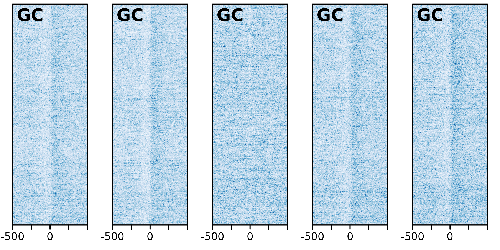
#plotHeatmapList(sm_GC2[6:10])
#plotHeatmapList(sm_GC2[11:15])
#plotHeatmapList(sm_GC3[1:5])The alignment stops are ordered in such a way that start (or left breaks) are centred on the top half of the plot, and end alignment stops are centred on the bottom. This is why we see different directionality in the plots. At the alignment stops, the GC content seems to be lower, but higher once within the aligned region.
Now looking at TATA content:
#hm_GC1_TATA <- sapply(gbs, bp_heatmap, basep_range = 1000, pat = "TATA", direction = "left") |> SimpleList()
hm_GC2_TATA <- sapply(coa[1:15], bp_heatmap, basep_range = 1000, pat = "TATA", direction = "left") |> SimpleList()
maxHeight <- 2000
#sm_GC1_TATA <- sapply(hm_GC1_TATA, smoothHeatmap, output.size = c(maxHeight, 500), algorithm = "kernel") |> SimpleList()
sm_GC2_TATA <- sapply(hm_GC2_TATA, smoothHeatmap, output.size = c(maxHeight, 500), algorithm = "kernel") |> SimpleList()##
## Calculating kernel density...
##
## Calculating kernel density...
##
## Calculating kernel density...
##
## Calculating kernel density...
##
## Calculating kernel density...
##
## Calculating kernel density...
##
## Calculating kernel density...
##
## Calculating kernel density...
##
## Calculating kernel density...
##
## Calculating kernel density...
##
## Calculating kernel density...
##
## Calculating kernel density...
##
## Calculating kernel density...
##
## Calculating kernel density...
##
## Calculating kernel density...
#sm_GC3_TATA <- sapply(hm_GC3_TATA, smoothHeatmap, output.size = c(maxHeight, 500), algorithm = "kernel") |> SimpleList()
#plotHeatmapList(sm_GC1_TATA)
plotHeatmapList(sm_GC2_TATA[1:5])## plotting heatmap TATA## plotting heatmap TATA
## plotting heatmap TATA
## plotting heatmap TATA
## plotting heatmap TATA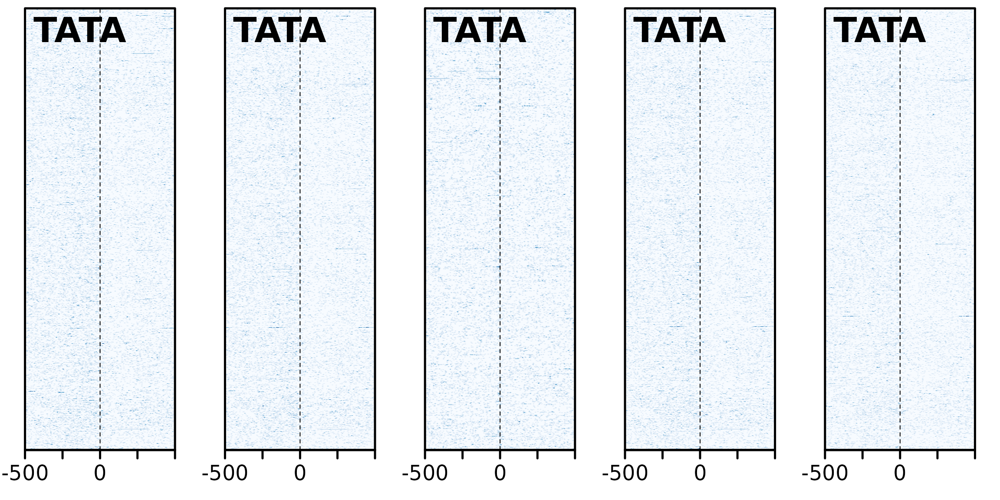
#plotHeatmapList(sm_GC3_TATA)The directionaility here is consistent with the GC content analysis. Furthermore; “TATA box sequence can act as a basal promoter element not only for RNA polymerase II (RNAP II) transcription, but also for transcription by RNA polymerase III (RNAP III)” - Wang Y, Jensen RC, Stumph WE. Role of TATA box sequence and orientation in determining RNA polymerase II/III transcription specificity. Nucleic Acids Res. 1996;24(15):3100–3106. doi:10.1093/nar/24.15.3100. However, the areas are not particularly enriched for TATA boxes, so it does not necessarily show that breakpoints are occurring directly after promoter regions.
#hm_GC1_mot <- sapply(gbs, bp_heatmap, basep_range = 1000, pat = "AGCNGC", direction = "left") |> SimpleList()
hm_GC2_mot <- sapply(coa[1:15], bp_heatmap, basep_range = 1000, pat = "AGCNGC", direction = "left") |> SimpleList()
maxHeight <- 2000
#sm_GC1_mot <- sapply(hm_GC1_mot, smoothHeatmap, output.size = c(maxHeight, 500), algorithm = "kernel") |> SimpleList()
sm_GC2_mot <- sapply(hm_GC2_mot, smoothHeatmap, output.size = c(maxHeight, 500), algorithm = "kernel") |> SimpleList()##
## Calculating kernel density...
##
## Calculating kernel density...
##
## Calculating kernel density...
##
## Calculating kernel density...
##
## Calculating kernel density...
##
## Calculating kernel density...
##
## Calculating kernel density...
##
## Calculating kernel density...
##
## Calculating kernel density...
##
## Calculating kernel density...
##
## Calculating kernel density...
##
## Calculating kernel density...
##
## Calculating kernel density...
##
## Calculating kernel density...
##
## Calculating kernel density...
#sm_GC3_mot <- sapply(hm_GC3_mot, smoothHeatmap, output.size = c(maxHeight, 500), algorithm = "kernel") |> SimpleList()
#plotHeatmapList(sm_GC1_mot)
plotHeatmapList(sm_GC2_mot[1:5])## plotting heatmap AGCNGC## plotting heatmap AGCNGC
## plotting heatmap AGCNGC
## plotting heatmap AGCNGC
## plotting heatmap AGCNGC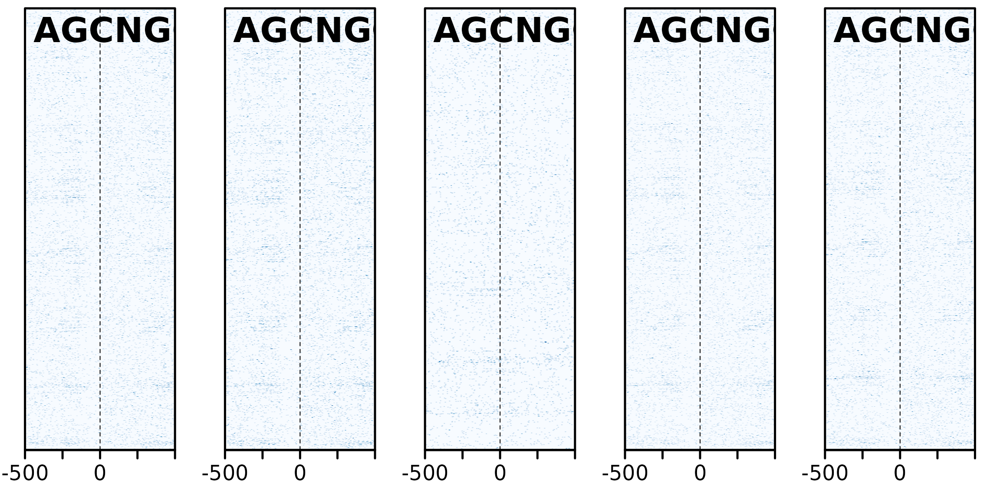
#plotHeatmapList(sm_GC3_mot)
# # Accessory functions
# clusterHeatmap <- function(hm, k = 2) kmeans(image(hm), k)
#
# orderHeatmap <- function(hm, cl) {
# image(hm) <- image(hm)[order(cl$cluster),]
# hm
# }
#
# subsetHeatmap <- function(hm, bool) {
# image(hm) <- image(hm)[bool,]
# hm
# }
#
# # DAta
# hm_GC <- bp_heatmap( gr_Oki_O, basep_range = 1000, pat = "GC", direction = "left")
# hm_TATA <- bp_heatmap( gr_Oki_O, basep_range = 1000, pat = "TATA", direction = "left")
# hm_tan <- feature_coverage(gr_Oki_O, tan_Oki, win = 1000, lab = "Tandem", direction = "left")
#
# # Define 3 K-mean clusters
# clusterHeatmap(hm_GC, 3) -> hm_cl_k4
#
# # Order and smooth
# shm_GC <- orderHeatmap(hm_GC, hm_cl_k4) %>%
# smoothHeatmap(output.size = c(2000,500), algorithm = "kernel")
#
# shm_TATA <- orderHeatmap(hm_TATA, hm_cl_k4) %>%
# smoothHeatmap(output.size = c(2000,500), algorithm = "kernel")
#
# shm_tan <- orderHeatmap(hm_tan, hm_cl_k4) %>%
# smoothHeatmap(output.size = c(2000,500), algorithm = "kernel")
#
# # Plot the ordered data
# plotHeatmapList(list(shm_GC, shm_TATA, shm_tan))
# par(mfrow = c(1,1)) # plotHeatmapList messes with mrfrow...
# plotHeatmapMeta(list(hm_GC, hm_TATA, hm_tan))
#
# plotHeatmapMeta(list(subsetHeatmap(hm_GC, hm_cl_k4$cluster == 1),
# subsetHeatmap(hm_GC, hm_cl_k4$cluster == 2),
# subsetHeatmap(hm_GC, hm_cl_k4$cluster == 3)))
#
# kmeanOrderedPlot <- function (hm, k=3, seed = 1) {
# set.seed(seed)
#
# cl <- kmeans(image(hm), k)
# mat <- image(hm)[order(cl$cluster),]
#
# kmhm = Heatmap(
# mat,
# coords=c(-500,500),
# label="kmeans",
# scale=range(mat))
#
# plotHeatmapList(kmhm,
# cex.label=1.5,
# partition=as.vector(table(cl$cluster)),
# partition.legend=TRUE,
# partition.lines=TRUE,
# legend=TRUE,
# legend.pos="r",
# legend.width=0.3)
# }
#
# kmeanOrderedPlot(shm_GC)The function bp_pair_analysis takes two pairwise alignments with the same target genome, and plots the alignment stops on to the centred alignment stops of the other. In the plot below, Osaka is there consistent target genome, and as such acts as a coordinate system to relate alignment stops across genomes. Lets produce two of these 3-way analyses; one between Osaka-Okinawa-Norway, and one between Osaka-Okinawa-Aomori
# hm1 <- bp_pair_analysis(gr_ref_q1 = gr_O_Oki, gr_ref_q2 = gr_O_N, win = 1000, lab = "Oki~Nor")
# plotHeatmapMeta(hm1)
#
# hm2 <- bp_pair_analysis(gr_ref_q1 = gr_O_Oki, gr_ref_q2 = gr_O_A, win = 1000, lab = "Oki~Aom")
# plotHeatmapMeta(hm2)The accumulation of alignment breaks of one pairwise alignment onto another suggests the existence of breakpoint hotspots; regions where breaks are far more likely to occur. Intuitively, this would lead to the presumption of synteny blocks, also. The pattern is consistent after coalescing, too;
# reduced_gr_O_N <- coalesce_contigs(gr_ob = gr_O_N, tol = 500)
#
# hm3 <- bp_pair_analysis(gr_ref_q1 = reduced_gr_O_Oki, gr_ref_q2 = reduced_gr_O_N, win = 1000, lab = "Oki~Nor")
# plotHeatmapMeta(hm3)The function GenomicBreaks::feature_coverage() will plot the coverage of tandem repeats around centred alignment stops.
#
# hm_tan1 <- feature_coverage(gr_ob = gr_O_Oki, feat = tan_O, win = 4000, lab = "Osk ~ Oki", direction = "left")
# plotHeatmapMeta(hm_tan1)
#
# hm_tan2 <- feature_coverage(gr_ob = reduced_gr_O_Oki, feat = tan_O, win = 4000, lab = "OSK~Oki (coalesced)", direction = "left")
# plotHeatmapMeta(hm_tan2)
#
# # should I also add comparison of proportions of tandem proximities before and after coalescion?There appears to be less tandem repeats around alignment stops after coalescion, inferring that perhaps that some are artefacts of difficult alignment near to tandem repeats.
TODO: analyse separately the breakpoint regions that are in colinear regions?
The function feature_coverage will plot the coverage of tandem repeats around centred alignment stops.
#current_GB <- gr_Oki_O # To ease recomputing with another object
current_GB <- gbs$Oki_Osa
#current_GB <- coa$Oki_Osa
gadems.invLeftGap <- readRDS("gadems.invLeftGap.Rda")
pwm <- gadems.invLeftGap$Oki_Osa[[1]]
pwm@consensus## [1] "rArAAGCCGCdwAGCsGCw"
pwmHits <- matchPWM(pwm = rGADEM::getPWM(pwm), genomes$Oki)## Warning in .Call2("XString_match_PWM", pwm, subject, min.score, count.only, :
## 'subject' contains letters not in [ACGT] ==> assigned weight 0 to them
## Warning in .Call2("XString_match_PWM", pwm, subject, min.score, count.only, :
## 'subject' contains letters not in [ACGT] ==> assigned weight 0 to them
## Warning in .Call2("XString_match_PWM", pwm, subject, min.score, count.only, :
## 'subject' contains letters not in [ACGT] ==> assigned weight 0 to them
## Warning in .Call2("XString_match_PWM", pwm, subject, min.score, count.only, :
## 'subject' contains letters not in [ACGT] ==> assigned weight 0 to them
## Warning in .Call2("XString_match_PWM", pwm, subject, min.score, count.only, :
## 'subject' contains letters not in [ACGT] ==> assigned weight 0 to them
## Warning in .Call2("XString_match_PWM", pwm, subject, min.score, count.only, :
## 'subject' contains letters not in [ACGT] ==> assigned weight 0 to them
## Warning in .Call2("XString_match_PWM", pwm, subject, min.score, count.only, :
## 'subject' contains letters not in [ACGT] ==> assigned weight 0 to them
## Warning in .Call2("XString_match_PWM", pwm, subject, min.score, count.only, :
## 'subject' contains letters not in [ACGT] ==> assigned weight 0 to them
## Warning in .Call2("XString_match_PWM", pwm, subject, min.score, count.only, :
## 'subject' contains letters not in [ACGT] ==> assigned weight 0 to them
## Warning in .Call2("XString_match_PWM", pwm, subject, min.score, count.only, :
## 'subject' contains letters not in [ACGT] ==> assigned weight 0 to them
hmList_OKI <- list()
hmList_OKI$genes <- feature_coverage(current_GB, genes(annots$Oki), win = 2000, lab = "Oki genes", direction = "left")
hmList_OKI$promoters <- feature_coverage(current_GB, promoters(annots$Oki), win = 2000, lab = "Oki promoters", direction = "left")## Warning in valid.GenomicRanges.seqinfo(x, suggest.trim = TRUE): GRanges object contains 4 out-of-bound ranges located on sequences
## chr1, chrUn_1, and chrUn_10. Note that ranges located on a sequence
## whose length is unknown (NA) or on a circular sequence are not
## considered out-of-bound (use seqlengths() and isCircular() to get the
## lengths and circularity flags of the underlying sequences). You can use
## trim() to trim these ranges. See ?`trim,GenomicRanges-method` for more
## information.
hmList_OKI$exons <- feature_coverage(current_GB, exonicParts(annots$Oki), win = 2000, lab = "Oki exons", direction = "left")
hmList_OKI$introns <- feature_coverage(current_GB, intronicParts(annots$Oki), win = 2000, lab = "Oki introns", direction = "left")
hmList_OKI$cds <- feature_coverage(current_GB, cds(annots$Oki), win = 2000, lab = "Oki cds", direction = "left")
hmList_OKI$utrs5 <- feature_coverage(current_GB, unlist(fiveUTRsByTranscript(annots$Oki)), win = 2000, lab = "Oki 5′ UTRs", direction = "left")
hmList_OKI$utrs3 <- feature_coverage(current_GB, unlist(threeUTRsByTranscript(annots$Oki)), win = 2000, lab = "Oki 3′ UTRs", direction = "left")
hmList_OKI$pwm <- feature_coverage(current_GB, pwmHits , win = 2000, lab = "PWM", direction = "left")
plotHeatmapMeta(hmList_OKI)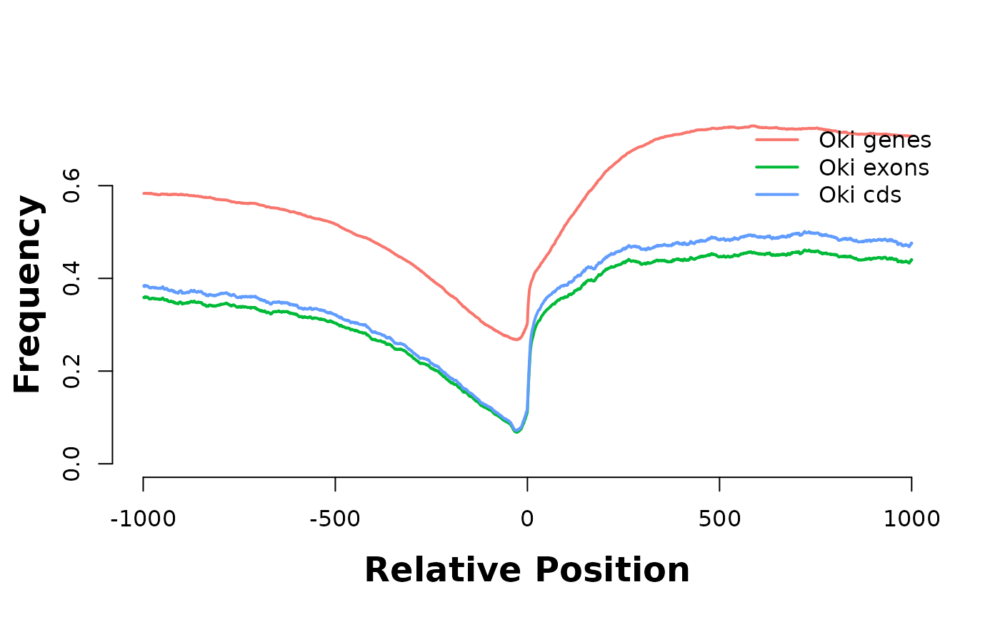
plotHeatmapMeta(hmList_OKI$genes)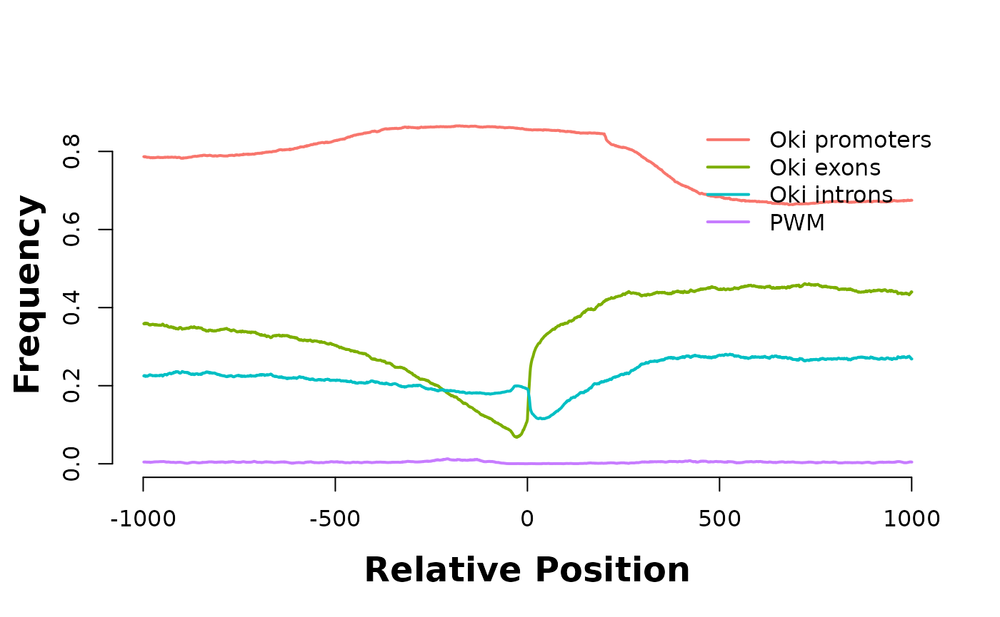
plotHeatmapMeta(hmList_OKI[c("exons", "cds")])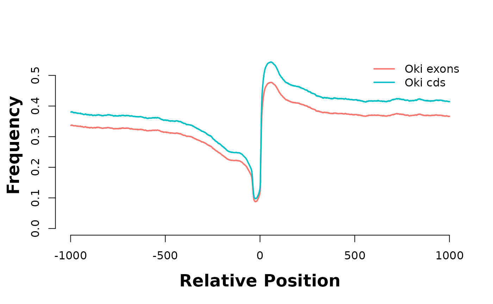
plotHeatmapMeta(hmList_OKI[c("exons", "introns", "utrs5", "utrs3", "pwm")])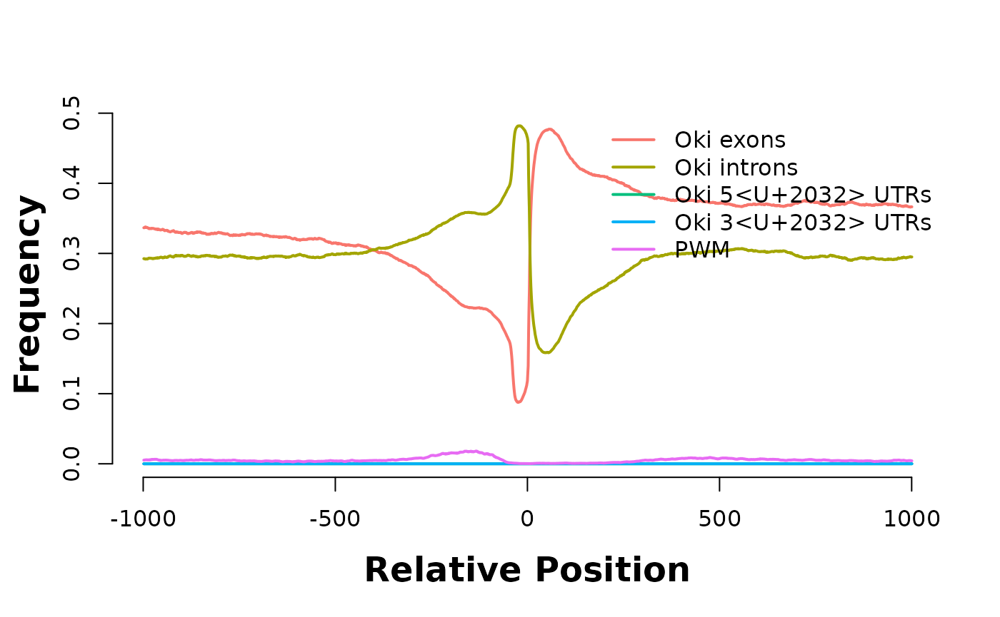
plotHeatmapMeta(hmList_OKI[c("introns", "utrs5", "utrs3", "pwm")])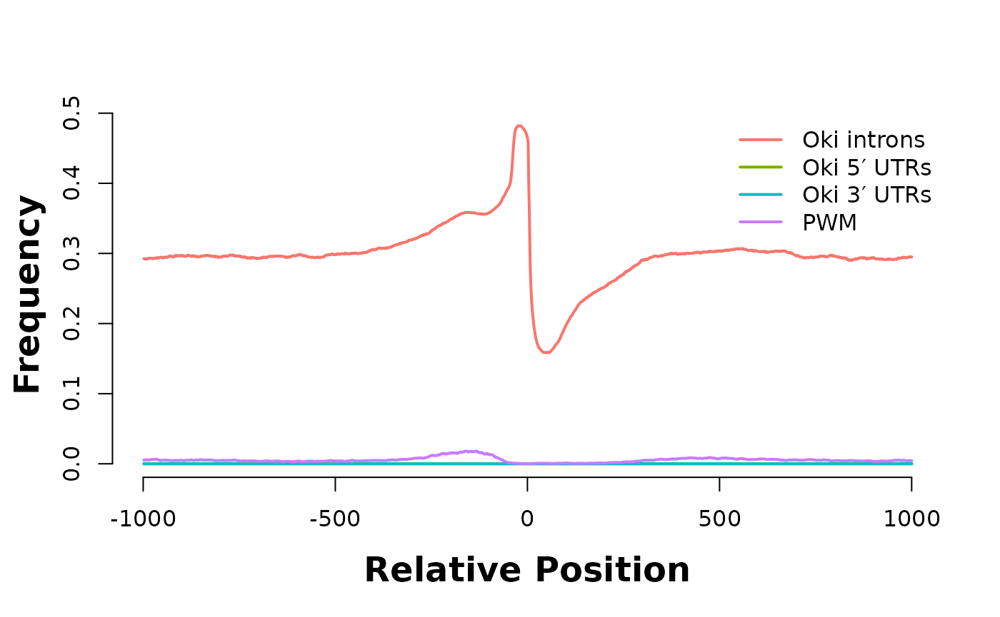
plotHeatmapMeta(hmList_OKI[c("utrs5", "utrs3", "pwm")])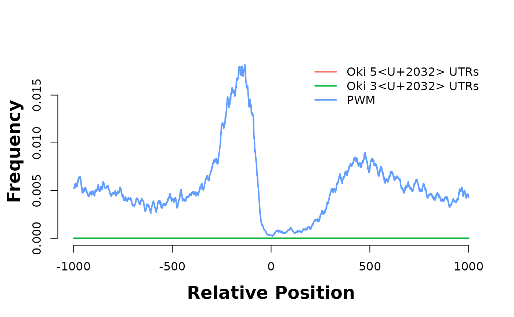
Aligned regions are enriched in exons and depleted in introns. Is it because exons are more alignable or is it because it is deleterous to break genes in exons ?
Let’s look at coverage around PWM hits of the AAGCsGCwwmkCGrCTTyn motif
current_GB <- pwmHits
hmList_PWM_OKI <- list()
hmList_PWM_OKI$genes <- feature_coverage(current_GB, genes(annots$Oki), win = 2000, lab = "Oki genes", direction = "left")
hmList_PWM_OKI$promoters <- feature_coverage(current_GB, promoters(annots$Oki), win = 2000, lab = "Oki promoters", direction = "left")## Warning in valid.GenomicRanges.seqinfo(x, suggest.trim = TRUE): GRanges object contains 4 out-of-bound ranges located on sequences
## chr1, chrUn_1, and chrUn_10. Note that ranges located on a sequence
## whose length is unknown (NA) or on a circular sequence are not
## considered out-of-bound (use seqlengths() and isCircular() to get the
## lengths and circularity flags of the underlying sequences). You can use
## trim() to trim these ranges. See ?`trim,GenomicRanges-method` for more
## information.
hmList_PWM_OKI$exons <- feature_coverage(current_GB, exonicParts(annots$Oki), win = 2000, lab = "Oki exons", direction = "left")
hmList_PWM_OKI$introns <- feature_coverage(current_GB, intronicParts(annots$Oki), win = 2000, lab = "Oki introns", direction = "left")
hmList_PWM_OKI$cds <- feature_coverage(current_GB, cds(annots$Oki), win = 2000, lab = "Oki cds", direction = "left")
hmList_PWM_OKI$utrs5 <- feature_coverage(current_GB, unlist(fiveUTRsByTranscript(annots$Oki)), win = 2000, lab = "Oki 5′ UTRs", direction = "left")
hmList_PWM_OKI$utrs3 <- feature_coverage(current_GB, unlist(threeUTRsByTranscript(annots$Oki)), win = 2000, lab = "Oki 3′ UTRs", direction = "left")
plotHeatmapMeta(hmList_PWM_OKI)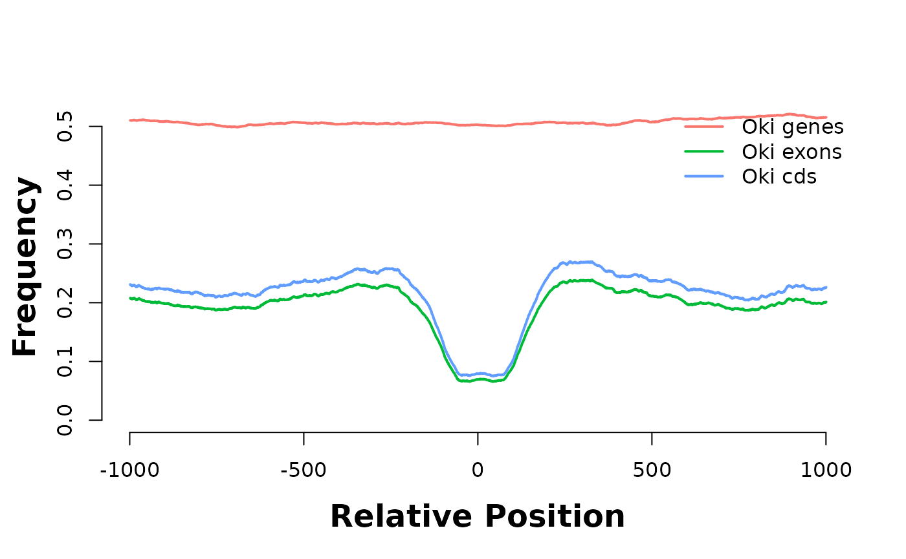
plotHeatmapMeta(hmList_PWM_OKI[c("exons", "introns")])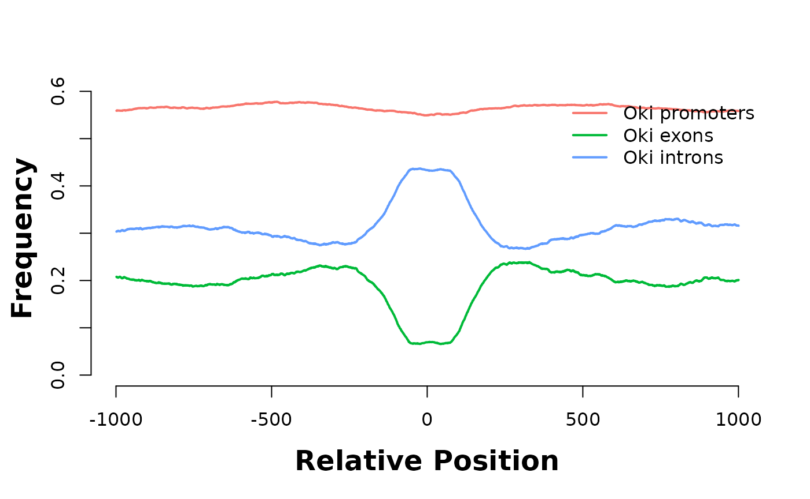
plotHeatmapMeta(hmList_PWM_OKI[c("exons", "utrs5", "utrs3")])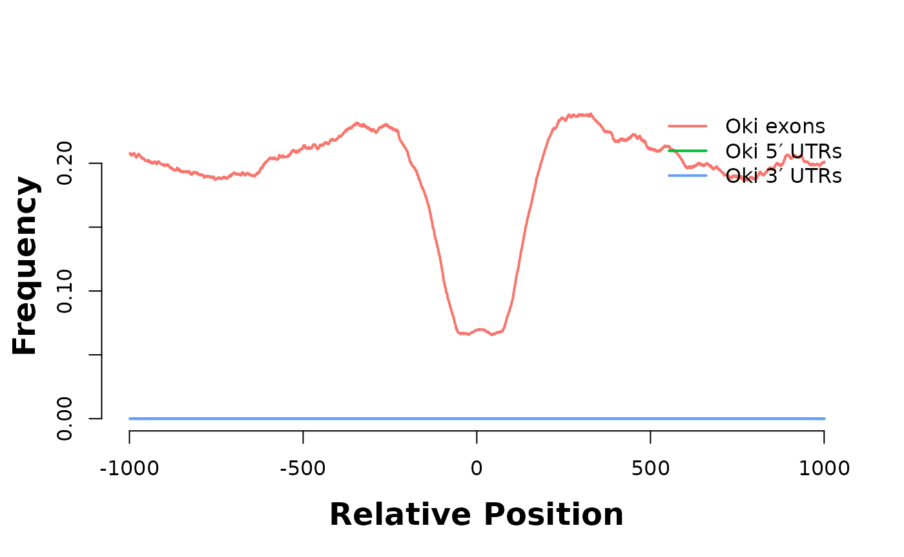
plotHeatmapMeta(hmList_PWM_OKI[c("utrs5", "utrs3")])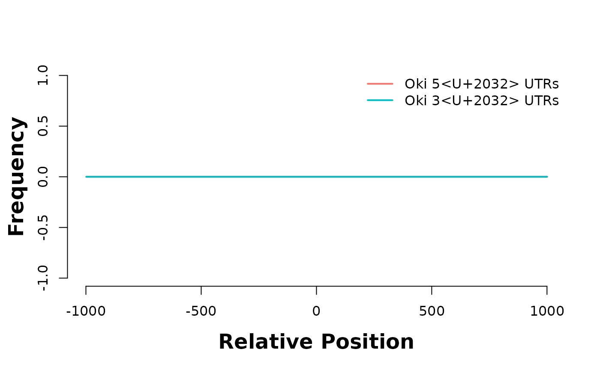
They are enriched in introns…
#
# # Sandbox to make sanity checks.
#
# a <- coa$Oki_Osa
# b <- unlist(fiveUTRsByTranscript(annots$Oki))
#
# hm_a <- feature_coverage(a, b, win = 2000, lab = "All ranges", direction = "left")
# hm_b <- feature_coverage(subsetByOverlaps(a, b), b, win = 2000, lab = "Subsetted ranges", direction = "left")
#
# plotHeatmapMeta(list(hm_a))
# plotHeatmapMeta(list(hm_b))As previously discussed, low coverage over an alignment stop could lower the likelihood of it being considered as a breakpoint. We have per-base coverage depth information for the Okinawan genome (Oki_cov_pb). However, the coverage of this particular assembly is quite good. In fact, we can investigate the coverge over alignment stops from the information obtained using master_bp_analysis.
# fin_Oki <- fin_gr_O_Oki[[2]]
# min_cov <- min(min(fin_Oki$left_cov_pb), min(fin_Oki$right_cov_pb)) # minimum coverage over an alignment stop
# min_cov
# length(fin_Oki[fin_Oki$left_cov_pb == min_cov]) + length(fin_Oki[fin_Oki$right_cov_pb == min_cov]) # how many of the minimum coverage is observed
# length(fin_Oki[fin_Oki$left_cov_pb <= 50]) + length(fin_Oki[fin_Oki$right_cov_pb <= 50]) # how many alignment stops have a coverage of less than or euqal to 50We may choose to kick out the one alignment stop for which there is no coverage. However, only 15 out of 34572 alignment stops have a coverage of less than or equal to 50, meaning that it would be hard to exclude more than just a few alignment stops using coverage information for breakpoint analysis.